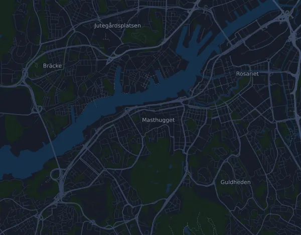

Göteborgsvarvet 21 km
- Distance
- 21 km
- Højdemeter
- ↑ 134 m
- Højeste punkt
- 51 m o.h.
- Underlag
- Vej
- Karakter
- Let kuperet
- Start
- kl. 13:00
- Væskedepoter
- 9
Højdeprofil
Forbered dig med Mila
Mila er en løbecoach i en app. Lægger du et løb ind i din plan, planlægger coachen ugerne frem til start efter din form og giver dig en tidsprognose og en plan for tempo, væske og energi på ruten.

Den rette træning. Den rette dag.
Ruten

Om ruten
Göteborgsvarvet er et vejløb på 21 km i Göteborg, Sverige. Ruten har 134 højdemeter stigning og 134 højdemeter fald, 6,4 m pr. km, og regnes dermed som let kuperet. Det højeste punkt ligger 51 m o.h. og det laveste 0 m o.h.
Den største stigning begynder ved km 3,6: 35 højdemeter på 2 km med 1,8 % i snit, op til 51 m o.h.
Arrangøren har 9 væskedepoter langs ruten, det første ved km 1,8 og det sidste ved km 20,2.
I Mila-appen beskriver coachen ruten i detaljer på dit sprog og planlægger dit tempo og din energi til den.
Stigninger
| Begynder ved | Længde | Højdemeter | Hældning | Top (m o.h.) |
|---|---|---|---|---|
| km 3,6 | 2 km | 35 m | 1,8 % | 51 |
Før start
Væskedepoter
| Ved | Her er |
|---|---|
| km 1,8 | vand |
| km 4,3 | vand |
| km 6,5 | vand, sportsdrik |
| km 8,5 | vand |
| km 12,0 | vand, sportsdrik |
| km 15,0 | vand, sportsdrik |
| km 16,8 | vand |
| km 18,2 | vand, sportsdrik |
| km 20,2 | vand |
Starttider
- kl. 13:00
Kilde: goteborgsvarvet.se, hentet 15. oktober 2026
Tempotabel
Göteborgsvarvet 21 km på 1:30:00 – tid pr. km og mellemtider
4:17 pr. km · km 5: 21:24 · km 10: 42:48 · km 15: 1:04:12 · mål: 1:30:00
Göteborgsvarvet 21 km på 1:45:00 – tid pr. km og mellemtider
5:00 pr. km · km 5: 24:58 · km 10: 49:56 · km 15: 1:14:54 · mål: 1:45:00
Göteborgsvarvet 21 km på 2:00:00 – tid pr. km og mellemtider
5:42 pr. km · km 5: 28:32 · km 10: 57:04 · km 15: 1:25:36 · mål: 2:00:00
Göteborgsvarvet 21 km på 2:15:00 – tid pr. km og mellemtider
6:25 pr. km · km 5: 32:06 · km 10: 1:04:12 · km 15: 1:36:17 · mål: 2:15:00
Tiderne forudsætter et jævnt tempo hele vejen. Det er ren regning, ingen prognose: på stigninger, i trængsel og ved væskedepoter svinger tempoet.
Ofte stillede spørgsmål
Hvornår løbes Göteborgsvarvet 21 km?
Göteborgsvarvet 21 km løbes lørdag den 22. maj 2027. Tjek dato og starttid hos arrangøren.
Hvornår starter Göteborgsvarvet 21 km?
Ifølge arrangøren: kl. 13:00.
Hvor langt er Göteborgsvarvet 21 km, og hvor mange højdemeter er der?
Løbet er 21 km langt med 134 højdemeter stigning og 134 højdemeter fald. Det højeste punkt ligger 51 m o.h.
Hvordan er ruten på Göteborgsvarvet 21 km?
Ruten regnes som let kuperet, med 6,4 højdemeter pr. km i snit. Den har én stigning på mindst 25 højdemeter, ved km 3,6: 35 højdemeter på 2 km. Start og mål ligger samme sted. Underlaget er vej.
Er der væskedepoter på Göteborgsvarvet 21 km?
Ja. Arrangøren har 9 væskedepoter: km 1,8 (vand); km 4,3 (vand); km 6,5 (vand, sportsdrik); km 8,5 (vand); km 12,0 (vand, sportsdrik); km 15,0 (vand, sportsdrik); km 16,8 (vand); km 18,2 (vand, sportsdrik); km 20,2 (vand).
Hvordan fordeler jeg farten på Göteborgsvarvet 21 km?
Gå efter en jævn indsats frem for et jævnt tempo: lad farten falde på stigningerne, hent den igen, når det flader ud, og hold igen de første kilometer. De største stigninger begynder ved km 3,6. I Mila får du en tempoplan til netop denne rute efter din egen form.
Flere løb som dette
Flere løb i nærheden
- Stockholm Marathon 42 km29. maj 2027 · Stockholm, Sverige
- Umåker Trail 15,6 km29. maj 2027 · Umeå (Röbäck/Umåker), Sverige
- COOP Kungsholmen Runt 10 km8. maj 2027 · Stockholm (Rålambshovsparken, Kungsholmen), Sverige
- Premiärmilen 10 km3. april 2027 · Stockholm (Norra Djurgården), Sverige
- Ursvik Ultra – UU Hårdingen 45 km20. marts 2027 · Sundbyberg, Sverige
- Fjällmaraton 100K29. juli 2027 · Fångåmon–Ottsjö, Undersåker (Årefjällen), Sverige
Forbered dig med Mila
Den rette træning. Den rette dag.
Oplysningerne kommer fra rutefilen og arrangørens information. Tjek dato, starttider og regler hos arrangøren.
Mila er ikke tilknyttet, sponsoreret af eller godkendt af arrangøren eller løbets sponsorer. Navne og varemærker tilhører deres ejere. Arrangør eller rettighedshaver? Bed om ændring eller fjernelse